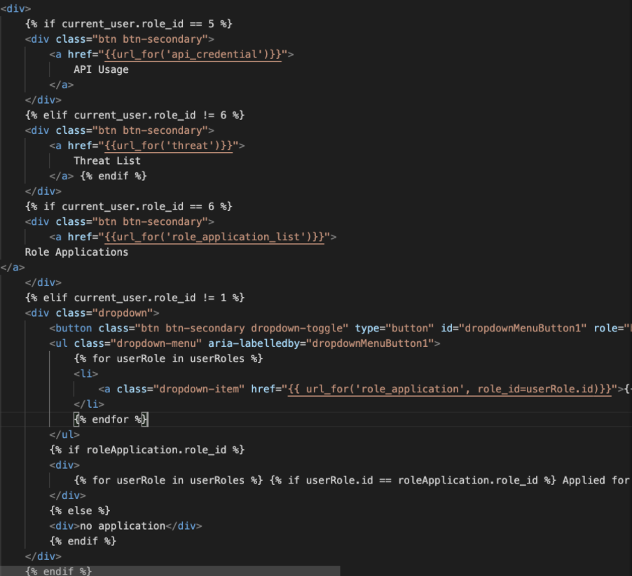
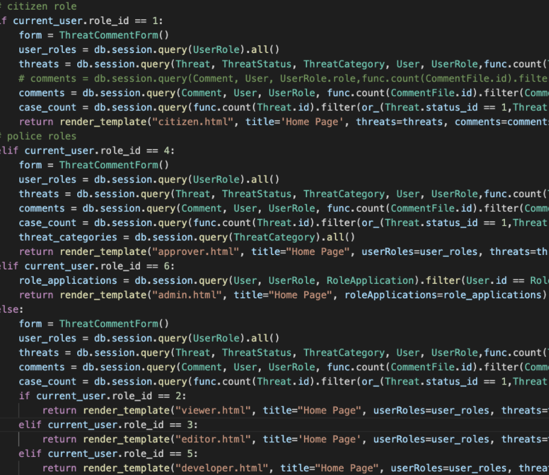
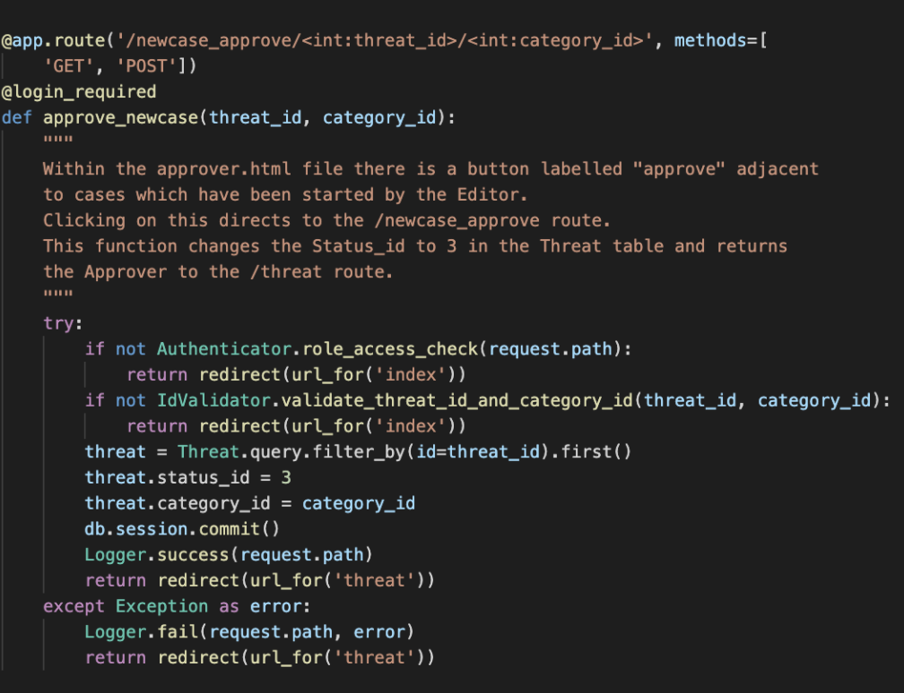

Secure Software Development
Development Team Project - Reflection
Reflection
Work allocation
During the development of the application, I was focused on building the functionalities of the ThreatManager website, while Hendrik was responsible for the login and the related security functions like TOPT and Jonny mainly worked
on the front-end and started investigating the testing.
From my point of view, it was quite a good work division. Since there is less overlapping among the work we distributed, meaning that they were less prone to affecting each other which may result in difficulties in integration.
The development pace is thus quite fast in my opinion as there are less hard integration problems with git which may hinder the development.
Challenges in implementing functionalities
User role authorization
As designed in the proposal document, there are different roles of users of the threat report system Each of them have different authorization in accessing different amounts of information and functionalities.
Thus, there is much consideration in writing the conditions to determine different data loading and different rendering.
Multiple Files upload and download
Since the number of files being downloaded by the user each time the download button is clicked, we have to count the number of files uploaded first in order to consider whether zipping multiple files is necessary. Along with the
security checks on file name, extension and calculating the total size of all the files, this is quite tricky to implement.
Database associated
It was also the first time for me to use SQLAlchemy, which provides an Object Relational Model (ORM) storing Python objects to a database representation of the object’s data. SQLAlchemy allows me to implement functions and operations
in a Pythonic way, or in an object oriented way.
As tables are normalised in the database, innerjoining several tables’ columns and row counts is necessary in order to render the threat list by threats and the comments associated with them.
Security Challenges
This project has enlightened me in having security concerns while implementing the functionalities.
Different access authority for different user role
The page is different for different user roles on the same routing pages, especially the dashboard page and the threat list page. Logic set with conditions checking the current_user.role_id is quite repetitive.


Secure routing
User may type the route directly in the url, which may result in unauthorized users doing restricted actions, accessing private content or typing invalid id
Throughout the development, it comes up with 1-3 authorization checking functions for most of the routes
The basic authorization for the user role in accessing the route
The citizen authorization for accessing her/his threat
Id validator for validating the id passing is actually exist in the table
Logger class and flash message
The success and failure functions of the Logger class are used to put in the try and catch respectively for each controller route.
The related action_logger and error_logger tables make the application more secure by recording the users’ usage history and bugs are easier to be traced.
Even when I was developing the application, the action and error logger tables that have already helped in debugging.
In order to create an action or error string which is more human-readable storing into the logging tables, two lists which are PATH_ACTION_LIST and PATH_ERROR_LIST are created to refer to the action or error sentences according
to the route as the keys.
Test Cases
Reflection
While writing the test case, I found it really helps me in finding the bugs and further reflecting on the practices related to security concerns.
I did find bugs which may be not really easy to be found using manual functional testing.
Writing the testing case made me feel like implementing the functional test while listing out all the possible situations of the user interacting with the functions.
For the security improvement found while writing the test cases, I found that the IDs being passed in routing were not implemented with validation.
difficulties
It was quite complicated getting into the testing methods or the way of coding. It was a problem in finding how to mock a logged-in user for the @login_required route and getting the information of the current_user. It was addressed by using the client.session_transaction()
to set the information manually.
Testing the file upload related routes is quite complicated. I have to use the io.BytesIO() for setting different number of files, size of files and extensions of files.
Improvements
better usage of class
class function
functions of the systems were not performed by function of the class
instead they were written with lines of code inside each route controller function directly operating with the target object (linked with data in database) but not capsuled in a function of a class
eg. approver approving new case application

inheritance
seldom did the inheritance of class used
some lines of code may be spared combining the use of more class functions
design pattern
it would be better if some of the design patterns are tried to be used
eg. factory pattern for function of approver approving new case and end case, making them to share the single entry point
Security
only the password of personal data was hashed, not the email, firstname, last name.
Test case did not cover all scenarios
especially the downloading functions
some bugs were found in black box testing due to not being covered by the white box testing which conducted first
all scenarios should be well listed first
Test case did not cover all unit functions
functions such as those dealing with uploading are coupling with each other
functions were failed to be separated due to sharing the common variable such as current_user and request
more investigation should be conducted to decouple them and do write the unit test for each